Distributed Email Service
Gmail jaisa email service 1 billion users ke liye — SMTP/IMAP/MX basics, sending aur receiving pipelines, Cassandra-style metadata modelling, deliverability (SPF/DKIM, IP warm-up), per-user search aur multi-DC availability.
Introduction
Notes ke hisaab se 2020 mein Gmail ke 1.8B aur Outlook ke 400M active users the. Email "simple" lagta hai, lekin is scale pe yeh storage (petabytes), reliability (ek bhi mail lose nahi), aur deliverability (spam folder se bachna) ka problem hai.
Step 1: Requirements aur scope
- 1B users.
- Features: send/receive, fetch, filter, search, anti-spam (auth abhi skip).
- Clients traditionally SMTP/POP/IMAP use karte hain, lekin is problem mein HTTP.
- Attachments: haan.
Non-functional
- Reliability — data loss nahi.
- Availability — replication, partial failures tolerate.
- Scalability — users badhte rahenge.
- Flexibility/extensibility — isi wajah se HTTP chuna, SMTP nahi.
Back-of-the-envelope
| Item | Math | Result |
|---|---|---|
| Send QPS | 1B × 10 mails/day / 10^5 s | 100k emails/sec |
| Metadata storage | 1B × 40 received/day × 365 × 50 KB | 730 PB/year |
| Attachments | 1B × 40 × 365 × 20% × 500 KB | 1,460 PB/year |
Step 2a: Email knowledge 101
| Protocol | Kaam |
|---|---|
| SMTP | Server-to-server mail bhejna (standard) |
| POP | Client mail download karta hai; download ke baad server se delete |
| IMAP | Download bhi, lekin mail server pe rehta hai (multi-device sync) |
| HTTPS | Email protocol nahi, lekin web-based clients ke liye |
DNS ke MX records batate hain ki kisi domain ka mail kaunsa server accept karta hai:
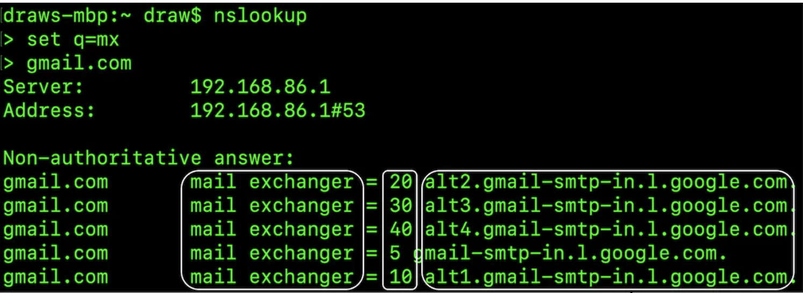
nslookup, set q=mx, gmail.com. Answer mein 5 mail exchangers: priority 5 → gmail-smtp-in.l.google.com, 10 → alt1, 20 → alt2, 30 → alt3, 40 → alt4. Beech wala circled number = priority — kam number = pehle try. Pehla fail ho to sender next priority wale ko try karta hai.Attachments base64-encoded jaate hain (size ~33% badh jaata hai), aur zyada tar services ~25 MB limit rakhti hain (configurable).
Traditional mail servers
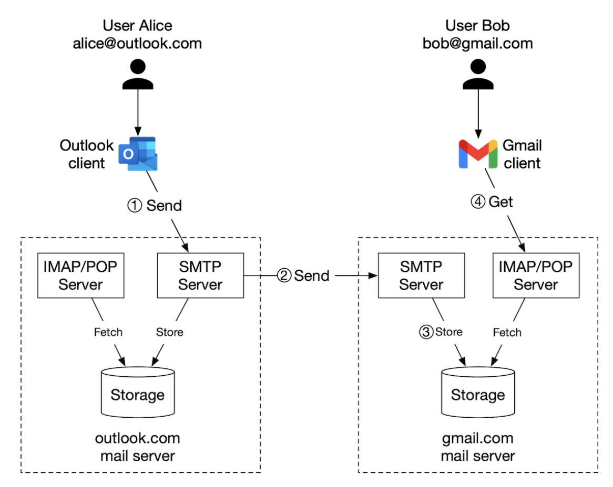
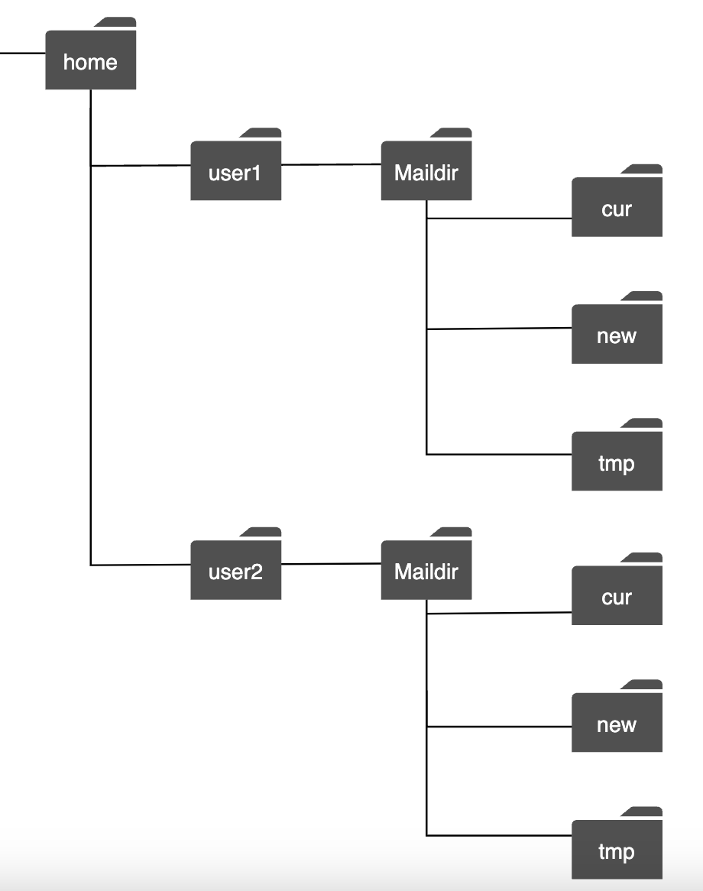
Step 2b: Distributed mail server — API aur high-level design
Native clients ke liye IMAP/POP aur server-to-server SMTP support rehta hai, lekin webmail ke liye REST:
POST /v1/messages // To, Cc, Bcc ko bhejo
GET /v1/folders // user ke saare folders
-> [{ id, name /* RFC6154: All, Archive, Drafts, Flagged, Junk, Sent, Trash */, user_id }]
GET /v1/folders/{folder_id}/messages // paginated
GET /v1/messages/{message_id}
-> { user_id, from:{name,email}, to:[{name,email}], subject, body, is_read }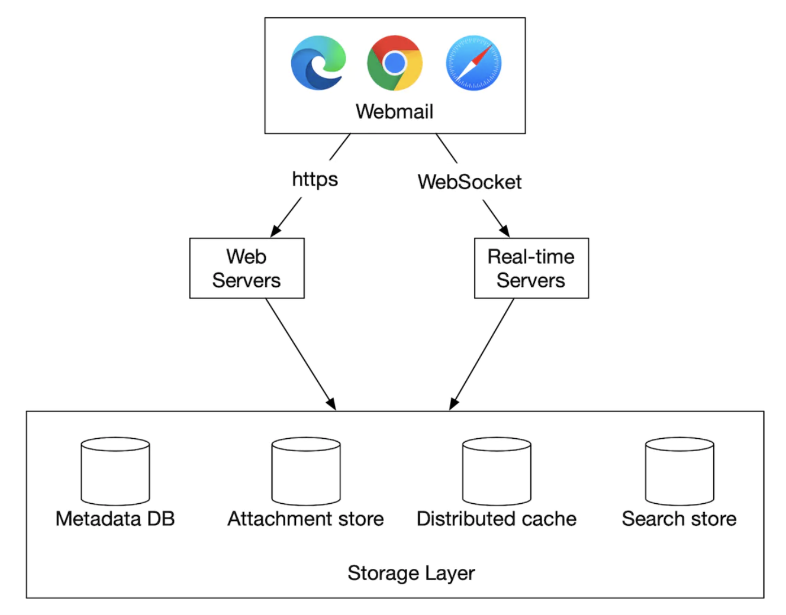
- Web servers: login, signup, profile, mail APIs.
- Real-time servers: naye mail push — WebSocket, purane browsers ke liye long-polling fallback. Stateful, isliye scale karna tricky.
- Metadata DB: subject, body, from, to…
- Attachment store: S3 jaisa object store.
- Distributed cache: recent emails Redis mein.
- Search store: full-text search ke liye document store.
Sending flow
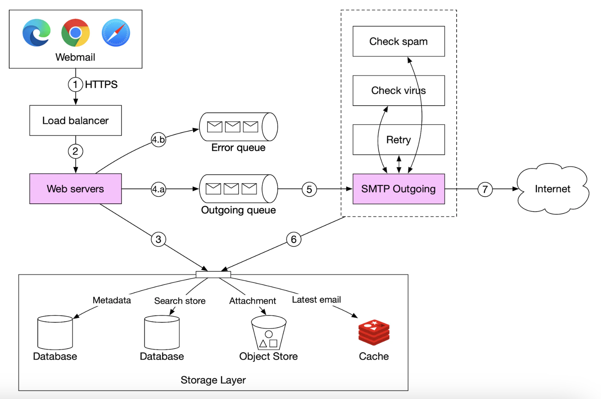
- LB excessive sends rate-limit karta hai (spammer control).
- Web server basic validation (size); same-domain recipient ho to outbound skip — lekin spam check pehle.
- Attachment object store mein, queue mein sirf reference.
- Outgoing queue size monitor karo: badh rahi hai to ya recipient server down (exponential backoff retry), ya consumers kam (scale).
@KafkaListener workers, Resilience4j retry with exponential backoff, aur per-destination circuit breaker taaki ek down recipient domain baaki sab ko slow na kare.Receiving flow
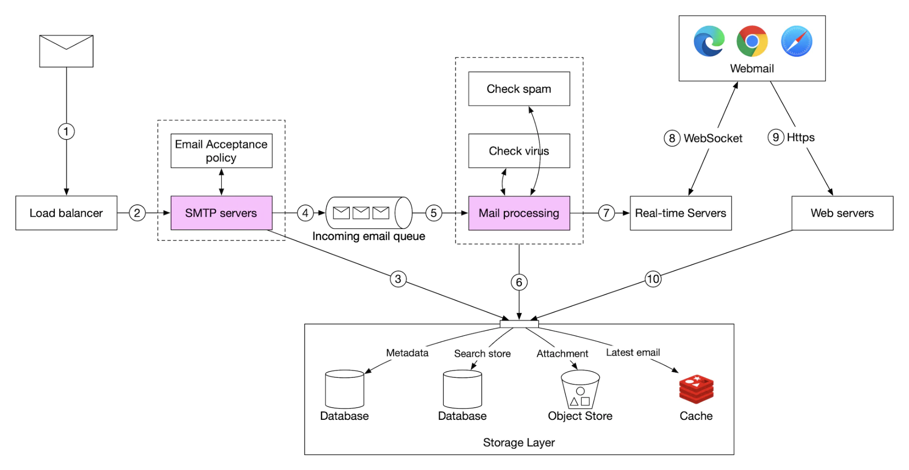
Step 3a: Metadata database
Email metadata ki characteristics:
- Headers chhote aur frequently accessed; body chhota-bada, usually ek baar padha jaata hai.
- Almost saare operations ek user tak isolated (fetch, mark read, search).
- Recency matters — log recent mails padhte hain.
- Data loss unacceptable.
| Option | Verdict |
|---|---|
| Relational | Headers/body index ho sakte hain, lekin chhote rows ke liye optimised; MB-size body awkward |
| Object store | Backup ke liye achha, lekin search / mark-as-read efficient nahi |
| NoSQL | Gmail Bigtable use karta hai (open source nahi) |
Interview mein naya DB design nahi karna, lekin ideal properties bolo: single column single-digit MB, strong consistency, low disk I/O, HA + fault tolerant, easy incremental backups.
Partition key = user_id — ek user ka data ek shard pe. (Trade-off: ek email multiple users ke beech share nahi; recipient ko apni copy milti hai.)
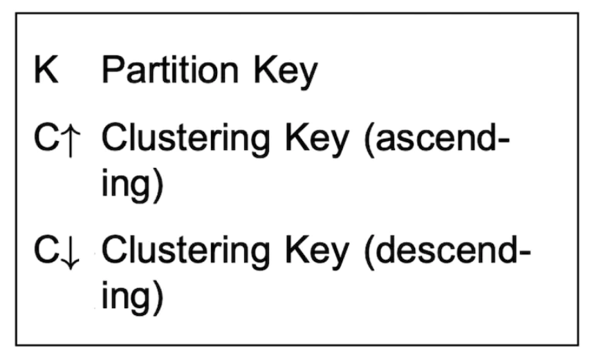
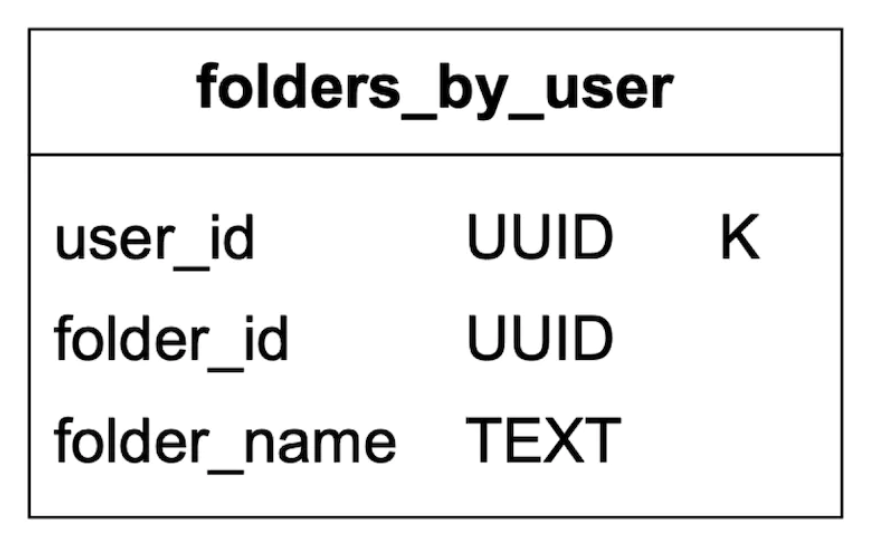
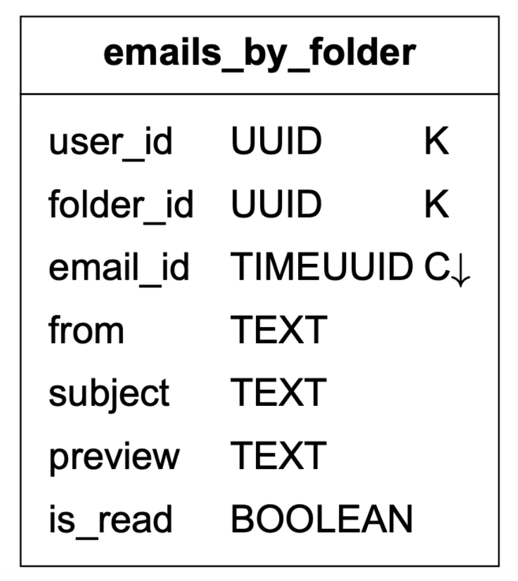
email_id TIMEUUID hai — time-based sorting free mein.
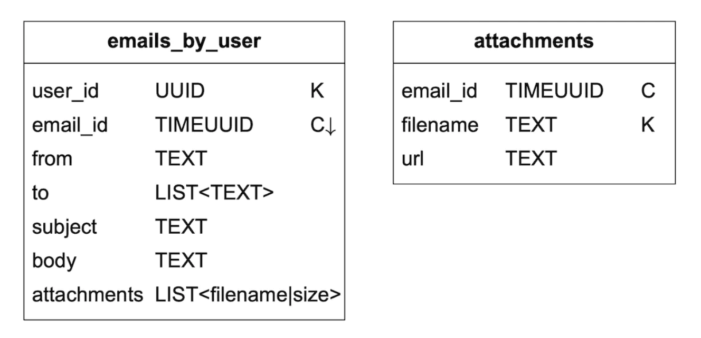
Read/unread filter Cassandra mein mushkil — non-key column pe filter allowed nahi. Fetch-all-then-filter bade users ke liye nahi chalega. Fix: denormalise:
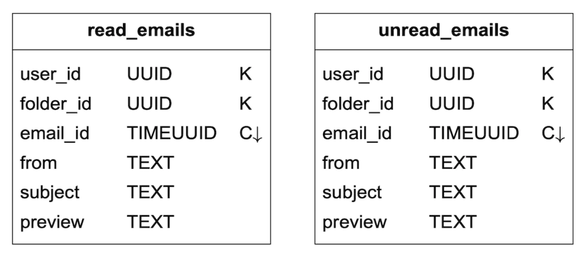
Conversation threads ke liye headers:
{
"headers": {
"Message-Id": "<7BA04B2A-430C-4D12-8B57-862103C34501@gmail.com>",
"In-Reply-To": "<CAEWTXuPfN=LzECjDJtgY9Vu03kgFvJnJUSHTt6TW@gmail.com>",
"References": ["<7BA04B2A-430C-4D12-8B57-862103C34501@gmail.com>"]
}
}Consistency > availability: failover/partition ke dauraan affected users ke sync/update briefly unavailable — lekin mailbox kabhi inconsistent nahi.
Step 3b: Email deliverability
Mail server bana lena easy, inbox tak pahunchna mushkil. Naya server = seedha spam folder. Upay:
- Dedicated IPs — shared IP pe trust nahi.
- Classify emails — marketing aur transactional (OTP, receipts) alag IPs/servers se.
- IP warm-up — dheere-dheere volume badhao; 2-6 hafte lagte hain.
- Ban spammers jaldi — reputation bachao.
- Feedback loops ISPs ke saath — complaint rate track.
- Authentication — SPF, DKIM (aur DMARC).
notify.bank.com vs offers.bank.com). Gmail/Yahoo ne 2024 se bulk senders ke liye SPF+DKIM+DMARC aur one-click unsubscribe mandatory kiya hai.Step 3c: Search
Email search ki khaasiyat: user-local, aur writes > reads — har send/receive/delete pe reindex, lekin search tab kabhi-kabhi.
| Scope | Sorting | Accuracy | |
|---|---|---|---|
| Google search | Poora internet | Relevance | Indexing mein time lagta hai, instant nahi |
| Email search | User ka mailbox | Time/date jaise attributes | Indexing turant + accurate |
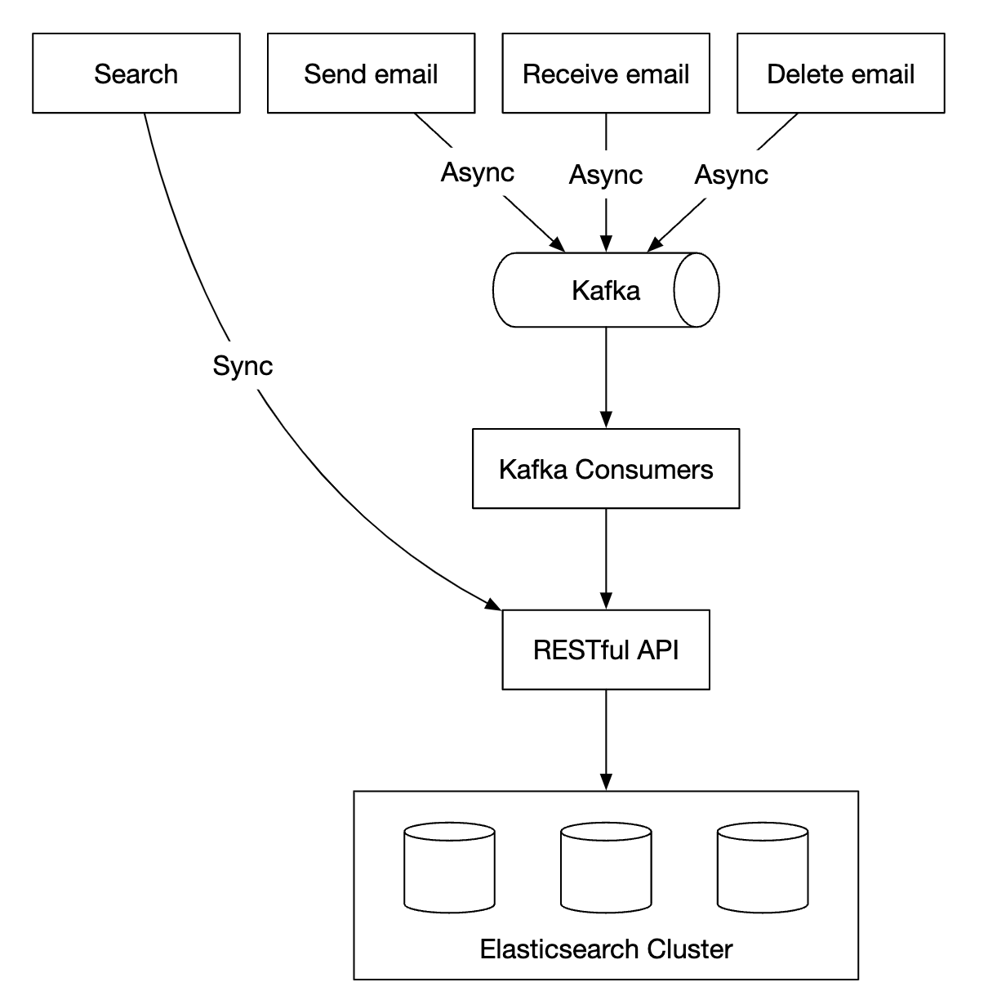
ES mein user_id se routing — ek user ka index data ek shard pe, query sirf ek shard hit kare.
Custom search engine banana ho to core challenge write-heavy workload — LSM tree:
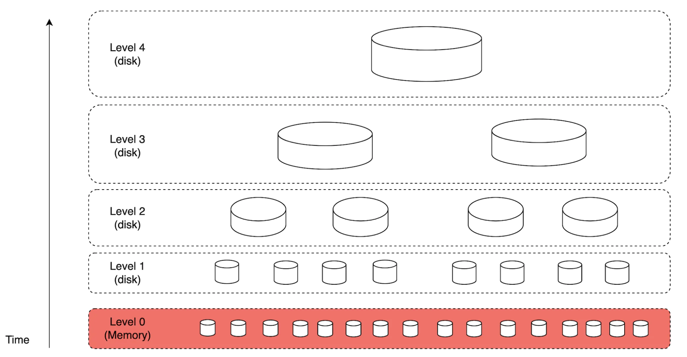
LSM Cassandra, Bigtable, RocksDB mein use hota hai.
| Elasticsearch | Custom engine | |
|---|---|---|
| Scale | Kuch had tak | Email use-case ke liye fine-tune, aage scale |
| Ops | Metadata store ke saath alag system | Datastore khud hi search kar sakta hai |
| Effort | Off-the-shelf | Bahut engineering |
Step 3d: Scalability aur availability
Users ke operations ek doosre se collide nahi karte → components independently scale.
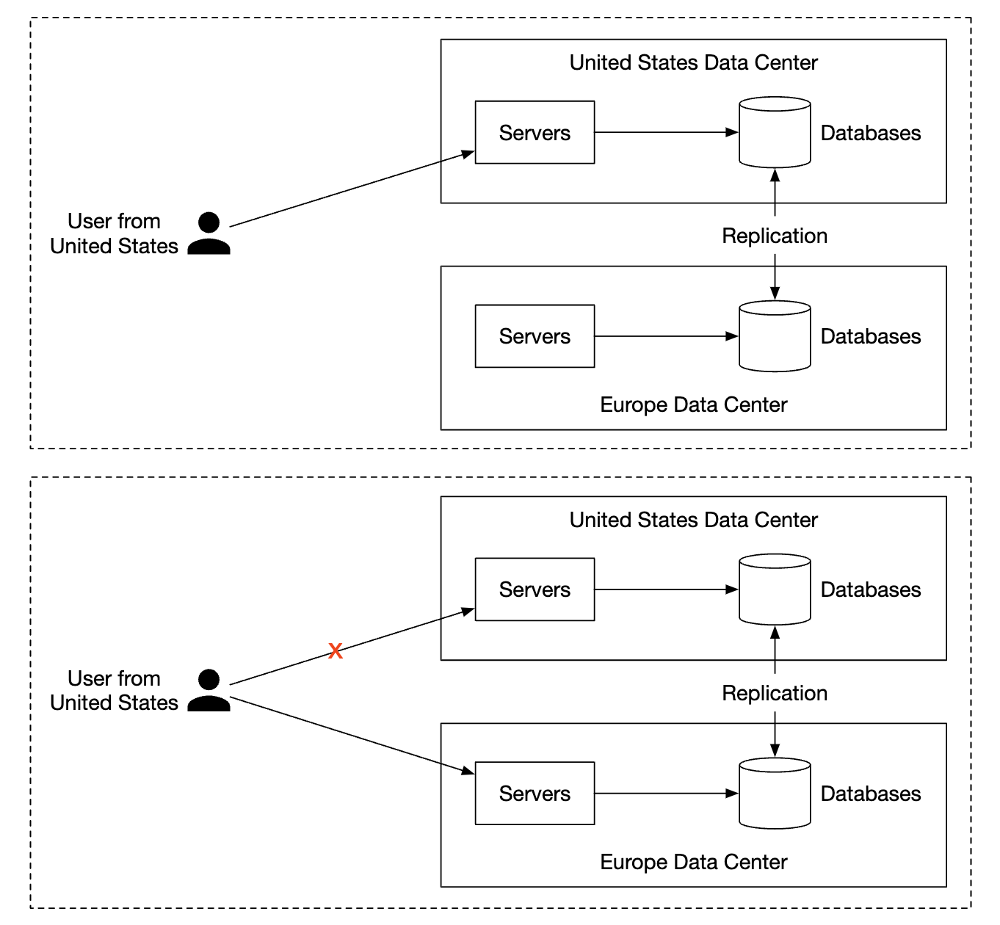
Step 4: Wrap up
- Fault tolerance — node failures kaise handle.
- Compliance — PII, GDPR (right to erasure — denormalised copies + search index + backups sab se delete!).
- Security — encryption, phishing protection, safe browsing.
- Optimisations — same attachment baar-baar bheja jaaye to dedupe (content hash).
- Numbers: 100k sends/sec, ~730 PB metadata + ~1,460 PB attachments/year → object store must.
- Email 101 (SMTP/IMAP/MX) 2 minute mein — dikhata hai domain samajhte ho.
- Architecture: web servers + real-time (WebSocket) + storage layer (metadata, attachments, cache, search).
- Send aur receive flows queues ke saath; outgoing queue monitoring + backoff.
- Deep dive: partition by user_id, query-driven tables, read/unread denormalisation, consistency choice.
- Deliverability + search (Kafka async indexing) + multi-DC.
Follow-up questions
- Q: Ek mail 1 lakh recipients ko (mailing list)?
- Fan-out workers, per-domain batching (ek SMTP transaction mein same domain ke multiple RCPT TO), rate limits per destination.
- Q: Duplicate incoming mail (sender ne retry kiya)?
Message-Id+ recipient se dedupe key — idempotent store.- Q: Attachment dedup kaise?
- Content hash (SHA-256) se object key; reference counting; per-user encryption ho to dedup sirf same tenant ke andar.
- Q: Real-time servers scale kaise?
- Sticky connections + registry (user → server) in Redis; naya mail aaye to registry se sahi server ko pub/sub.
Key Takeaways
- HTTP APIs webmail ke liye; SMTP server-to-server; MX records routing batate hain.
- Petabyte scale → attachments object store mein; metadata NoSQL partitioned by user_id.
- Query-first modelling: emails_by_folder, read/unread tables (denormalisation ki cost samjho).
- Send/receive dono queue-based pipelines with spam/virus checks aur retries.
- Deliverability ek domain-knowledge problem hai: dedicated IPs, warm-up, SPF/DKIM, feedback loops.
- Search: writes > reads, async indexing via Kafka; LSM trees write-heavy indexing ke liye.
- Consistency > availability for mailbox; multi-DC leader-follower failover.